19 The Symbolic Math Toolbox
Contents
- 19.1 Symbolic variables
- 19.2 Calculus
- 19.3 Variable precision arithmetic
- 19.4 Numeric and symbolic substitution
- 19.5 Algebraic simplification
- 19.6 Two-dimensional graphs
- 19.7 Three-dimensional surface graphs
- 19.8 Three-dimensional curves
- 19.9 Symbolic matrix operations
- 19.10 Symbolic linear algebraic functions
- 19.11 Solving algebraic equations
- 19.12 Solving differential equations
- 19.13 Further MuPAD access
19.1 Symbolic variables
syms x
syms x real
z = 1/10
a = sym(z)
y = rand(1)
b = sym(y, 'd')
z =
0.1000
a =
1/10
y =
0.6443
b =
0.64431813019369166273264681876753
a = sym('1/10')
a = 1 / sym(10)
a = 1/10 a = 1/10
sym(log(2))
sym('log(2)')
log(sym(2))
ans = 6243314768165359/9007199254740992 ans = log(2) ans = log(2)
syms x f = sym('f(x)')
f = f(x)
19.2 Calculus
syms x
f = x^2 * exp(x)
diff(f)
f = x^2*exp(x) ans = x^2*exp(x) + 2*x*exp(x)
syms t
diff(sin(pi*t))
ans = pi*cos(pi*t)
syms x n f = sym('f(x)') g = sym('g(x)') pretty(diff(f*g)) pretty(diff(f/g)) pretty(diff(1/f)) pretty(simplify(diff(f^n)))
f =
f(x)
g =
g(x)
d d
f(x) -- g(x) + g(x) -- f(x)
dx dx
d d
-- f(x) f(x) -- g(x)
dx dx
------- - ------------
g(x) 2
g(x)
d
-- f(x)
dx
- -------
2
f(x)
n - 1 d
n f(x) -- f(x)
dx
syms x a b f = x/(a*x+b) pretty(f) g = int(f) pretty(g) latex(g) ccode(g) fortran(g) int(g) pretty(ans)
f =
x/(b + a*x)
x
-------
b + a x
g =
-(b*log(b + a*x) - a*x)/a^2
b log(b + a x) - a x
- --------------------
2
a
ans =
-\frac{b\, \mathrm{log}\!\left(b + a\, x\right) - a\, x}{a^2}
ans =
t0 = -1.0/(a*a)*(b*log(b+a*x)-a*x);
ans =
t0 = -1.0D0/a**2*(b*log(b+a*x)-a*x)
ans =
((a^2*x^2)/2 - b^2*log(b + a*x) + a*(b*x - b*x*log(b + a*x)))/a^3
2 2
a x 2
----- - b log(b + a x) + a (b x - b x log(b + a x))
2
----------------------------------------------------
3
a
syms x y g = x*y + x^2 diff(g) diff(g, x) diff(g, y)
g = x^2 + y*x ans = 2*x + y ans = 2*x + y ans = x
syms x x1 x2 theta F = x * (x1*x2 + x1 - 2) findsym(F,1) findsym(F,1) diff(F, x) diff(F, x1) diff(F, x2) G = cos(theta*x) diff(G, theta)
F = x*(x1 + x1*x2 - 2) Warning: FINDSYM will be removed in a future release. Use SYMVAR instead. ans = x Warning: FINDSYM will be removed in a future release. Use SYMVAR instead. ans = x ans = x1 + x1*x2 - 2 ans = x*(x2 + 1) ans = x*x1 G = cos(theta*x) ans = -x*sin(theta*x)
diff(sin(2*x), 2) diff(sin(2*x), x, 2)
ans = -4*sin(2*x) ans = -4*sin(2*x)
syms a b t x y z theta int(sin(a*t + b)) int(sin(a*theta + b), theta) int(x*y^2 + y*z, y) int(x^2 * sin(x))
ans = -cos(b + a*t)/a ans = -cos(b + a*theta)/a ans = (y^2*(3*z + 2*x*y))/6 ans = 2*x*sin(x) - cos(x)*(x^2 - 2)
int(exp(-x^2)) int(sqrt(1 + x^3))
ans = (pi^(1/2)*erf(x))/2 ans = (2*x*(x^3 + 1)^(1/2))/5 + (6*((3^(1/2)*1i)/2 + 3/2)*((x + (3^(1/2)*1i)/2 - 1/2)/((3^(1/2)*1i)/2 - 3/2))^(1/2)*((x + 1)/((3^(1/2)*1i)/2 + 3/2))^(1/2)*((1/2 + (3^(1/2)*1i)/2 - x)/((3^(1/2)*1i)/2 + 3/2))^(1/2)*ellipticF(asin(((x + 1)/((3^(1/2)*1i)/2 + 3/2))^(1/2)), -((3^(1/2)*1i)/2 + 3/2)/((3^(1/2)*1i)/2 - 3/2)))/(5*(x^3 + (- (- 1/2 + (3^(1/2)*1i)/2)*(1/2 + (3^(1/2)*1i)/2) - 1)*x - (- 1/2 + (3^(1/2)*1i)/2)*(1/2 + (3^(1/2)*1i)/2))^(1/2))
f = sym('f(x)')
int(diff(f) / f)
f = f(x) ans = log(f(x))
int(sin(x), 0, pi) int(sin(theta), theta, 0, pi)
ans = 2 ans = 2
int(x^5, 1, 2) int(log(x), 1, 4) int(x * exp(x), 0, 2) int(exp(-x^2), 0, inf)
ans = 21/2 ans = log(256) - 3 ans = exp(2) + 1 ans = pi^(1/2)/2
int(exp(-x^2), 0, inf)
ans = pi^(1/2)/2
pi^(1/2)/2
ans =
0.8862
vpa(ans, 25)
ans = 0.8862269254527579409597138
syms h n x limit((1 + x/n)^n, n, inf)
ans = exp(x)
limit(sin(x), x, 0) limit((sin(x+h)-sin(x))/h, h, 0)
ans = 0 ans = cos(x)
taylor(cos(x) + sin(x))
ans = x^5/120 + x^4/24 - x^3/6 - x^2/2 + x + 1
taylor(cos(x^2), 8, x, pi)
19.3 Variable precision arithmetic
s = simplify(sym('13/17 + 17/23'))
s = 588/391
pi*log(2)
ans =
2.1776
vpa('pi * log(2)') vpa(sym(pi) * log(sym(2))) vpa('pi * log(2)', 50)
ans = 2.1775860903036021305006888982376 ans = 2.1775860903036021305006888982376 ans = 2.1775860903036021305006888982376139473385837003693
pretty(vpa('pi', 10000))
3.14159265358979323846264338327950288419716939937510582097494459230781640628\ 6208998628034825342117067982148086513282306647093844609550582231725359408128\ 4811174502841027019385211055596446229489549303819644288109756659334461284756\ 4823378678316527120190914564856692346034861045432664821339360726024914127372\ 4587006606315588174881520920962829254091715364367892590360011330530548820466\ 5213841469519415116094330572703657595919530921861173819326117931051185480744\ 6237996274956735188575272489122793818301194912983367336244065664308602139494\ 6395224737190702179860943702770539217176293176752384674818467669405132000568\ 1271452635608277857713427577896091736371787214684409012249534301465495853710\ 5079227968925892354201995611212902196086403441815981362977477130996051870721\ 1349999998372978049951059731732816096318595024459455346908302642522308253344\ 6850352619311881710100031378387528865875332083814206171776691473035982534904\ 2875546873115956286388235378759375195778185778053217122680661300192787661119\ 5909216420198938095257201065485863278865936153381827968230301952035301852968\ 9957736225994138912497217752834791315155748572424541506959508295331168617278\ 5588907509838175463746493931925506040092770167113900984882401285836160356370\ 7660104710181942955596198946767837449448255379774726847104047534646208046684\ 2590694912933136770289891521047521620569660240580381501935112533824300355876\ 4024749647326391419927260426992279678235478163600934172164121992458631503028\ 6182974555706749838505494588586926995690927210797509302955321165344987202755\ 9602364806654991198818347977535663698074265425278625518184175746728909777727\ 9380008164706001614524919217321721477235014144197356854816136115735255213347\ 5741849468438523323907394143334547762416862518983569485562099219222184272550\ 2542568876717904946016534668049886272327917860857843838279679766814541009538\ 8378636095068006422512520511739298489608412848862694560424196528502221066118\ 6306744278622039194945047123713786960956364371917287467764657573962413890865\ 8326459958133904780275900994657640789512694683983525957098258226205224894077\ 2671947826848260147699090264013639443745530506820349625245174939965143142980\ 9190659250937221696461515709858387410597885959772975498930161753928468138268\ 6838689427741559918559252459539594310499725246808459872736446958486538367362\ 2262609912460805124388439045124413654976278079771569143599770012961608944169\ 4868555848406353422072225828488648158456028506016842739452267467678895252138\ 5225499546667278239864565961163548862305774564980355936345681743241125150760\ 6947945109659609402522887971089314566913686722874894056010150330861792868092\ 0874760917824938589009714909675985261365549781893129784821682998948722658804\ 8575640142704775551323796414515237462343645428584447952658678210511413547357\ 3952311342716610213596953623144295248493718711014576540359027993440374200731\ 0578539062198387447808478489683321445713868751943506430218453191048481005370\ 6146806749192781911979399520614196634287544406437451237181921799983910159195\ 6181467514269123974894090718649423196156794520809514655022523160388193014209\ 3762137855956638937787083039069792077346722182562599661501421503068038447734\ 5492026054146659252014974428507325186660021324340881907104863317346496514539\ 0579626856100550810665879699816357473638405257145910289706414011097120628043\ 9039759515677157700420337869936007230558763176359421873125147120532928191826\ 1861258673215791984148488291644706095752706957220917567116722910981690915280\ 1735067127485832228718352093539657251210835791513698820914442100675103346711\ 0314126711136990865851639831501970165151168517143765761835155650884909989859\ 9823873455283316355076479185358932261854896321329330898570642046752590709154\ 8141654985946163718027098199430992448895757128289059232332609729971208443357\ 3265489382391193259746366730583604142813883032038249037589852437441702913276\ 5618093773444030707469211201913020330380197621101100449293215160842444859637\ 6698389522868478312355265821314495768572624334418930396864262434107732269780\ 2807318915441101044682325271620105265227211166039666557309254711055785376346\ 6820653109896526918620564769312570586356620185581007293606598764861179104533\ 4885034611365768675324944166803962657978771855608455296541266540853061434443\ 1858676975145661406800700237877659134401712749470420562230538994561314071127\ 0004078547332699390814546646458807972708266830634328587856983052358089330657\ 5740679545716377525420211495576158140025012622859413021647155097925923099079\ 6547376125517656751357517829666454779174501129961489030463994713296210734043\ 7518957359614589019389713111790429782856475032031986915140287080859904801094\ 1214722131794764777262241425485454033215718530614228813758504306332175182979\ 8662237172159160771669254748738986654949450114654062843366393790039769265672\ 1463853067360965712091807638327166416274888800786925602902284721040317211860\ 8204190004229661711963779213375751149595015660496318629472654736425230817703\ 6751590673502350728354056704038674351362222477158915049530984448933309634087\ 8076932599397805419341447377441842631298608099888687413260472156951623965864\ 5730216315981931951673538129741677294786724229246543668009806769282382806899\ 6400482435403701416314965897940924323789690706977942236250822168895738379862\ 3001593776471651228935786015881617557829735233446042815126272037343146531977\ 7741603199066554187639792933441952154134189948544473456738316249934191318148\ 0927777103863877343177207545654532207770921201905166096280490926360197598828\ 1613323166636528619326686336062735676303544776280350450777235547105859548702\ 7908143562401451718062464362679456127531813407833033625423278394497538243720\ 5835311477119926063813346776879695970309833913077109870408591337464144282277\ 2634659470474587847787201927715280731767907707157213444730605700733492436931\ 1383504931631284042512192565179806941135280131470130478164378851852909285452\ 0116583934196562134914341595625865865570552690496520985803385072242648293972\ 8584783163057777560688876446248246857926039535277348030480290058760758251047\ 4709164396136267604492562742042083208566119062545433721315359584506877246029\ 0161876679524061634252257719542916299193064553779914037340432875262888963995\ 8794757291746426357455254079091451357111369410911939325191076020825202618798\ 5318877058429725916778131496990090192116971737278476847268608490033770242429\ 1651300500516832336435038951702989392233451722013812806965011784408745196012\ 1228599371623130171144484640903890644954440061986907548516026327505298349187\ 4078668088183385102283345085048608250393021332197155184306354550076682829493\ 0413776552793975175461395398468339363830474611996653858153842056853386218672\ 5233402830871123282789212507712629463229563989898935821167456270102183564622\ 0134967151881909730381198004973407239610368540664319395097901906996395524530\ 0545058068550195673022921913933918568034490398205955100226353536192041994745\ 5385938102343955449597783779023742161727111723643435439478221818528624085140\ 0666044332588856986705431547069657474585503323233421073015459405165537906866\ 2733379958511562578432298827372319898757141595781119635833005940873068121602\ 8764962867446047746491599505497374256269010490377819868359381465741268049256\ 4879855614537234786733039046883834363465537949864192705638729317487233208376\ 0112302991136793862708943879936201629515413371424892830722012690147546684765\ 3576164773794675200490757155527819653621323926406160136358155907422020203187\ 2776052772190055614842555187925303435139844253223415762336106425063904975008\ 6562710953591946589751413103482276930624743536325691607815478181152843667957\ 0611086153315044521274739245449454236828860613408414863776700961207151249140\ 4302725386076482363414334623518975766452164137679690314950191085759844239198\ 6291642193994907236234646844117394032659184044378051333894525742399508296591\ 2285085558215725031071257012668302402929525220118726767562204154205161841634\ 8475651699981161410100299607838690929160302884002691041407928862150784245167\ 0908700069928212066041837180653556725253256753286129104248776182582976515795\ 9847035622262934860034158722980534989650226291748788202734209222245339856264\ 7669149055628425039127577102840279980663658254889264880254566101729670266407\ 6559042909945681506526530537182941270336931378517860904070866711496558343434\ 7693385781711386455873678123014587687126603489139095620099393610310291616152\ 8813843790990423174733639480457593149314052976347574811935670911013775172100\ 8031559024853090669203767192203322909433467685142214477379393751703443661991\ 0403375111735471918550464490263655128162288244625759163330391072253837421821\ 4088350865739177150968288747826569959957449066175834413752239709683408005355\ 9849175417381883999446974867626551658276584835884531427756879002909517028352\ 9716344562129640435231176006651012412006597558512761785838292041974844236080\ 0719304576189323492292796501987518721272675079812554709589045563579212210333\ 4669749923563025494780249011419521238281530911407907386025152274299581807247\ 1625916685451333123948049470791191532673430282441860414263639548000448002670\ 4962482017928964766975831832713142517029692348896276684403232609275249603579\ 9646925650493681836090032380929345958897069536534940603402166544375589004563\ 2882250545255640564482465151875471196218443965825337543885690941130315095261\ 7937800297412076651479394259029896959469955657612186561967337862362561252163\ 2086286922210327488921865436480229678070576561514463204692790682120738837781\ 4233562823608963208068222468012248261177185896381409183903673672220888321513\ 7556003727983940041529700287830766709444745601345564172543709069793961225714\ 2989467154357846878861444581231459357198492252847160504922124247014121478057\ 3455105008019086996033027634787081081754501193071412233908663938339529425786\ 9050764310063835198343893415961318543475464955697810382930971646514384070070\ 7360411237359984345225161050702705623526601276484830840761183013052793205427\ 4628654036036745328651057065874882256981579367897669742205750596834408697350\ 2014102067235850200724522563265134105592401902742162484391403599895353945909\ 4407046912091409387001264560016237428802109276457931065792295524988727584610\ 126483699989225695968815920560010165525637568
vpa(pi * log(2))
ans = 2.1775860903036021731793425715296
19.4 Numeric and symbolic substitution
syms x s t subs(sin(x), x, pi/3) subs(sin(x), x, sym(pi)/3) double(ans) subs(g*t^2/2, t, sqrt(2*s)) subs(sqrt(1-x^2), x, cos(x)) subs(sqrt(1-x^2), 1-x^2, cos(x))
ans =
3^(1/2)/2
ans =
3^(1/2)/2
ans =
0.8660
ans =
s*(x^2 + y*x)
ans =
(1 - cos(x)^2)^(1/2)
ans =
cos(x)^(1/2)
syms x y S = x^y subs(S, x, 3) subs(S, {x y}, {3 2}) subs(S, {x y}, {3 x+1})
S = x^y ans = 3^y ans = 9 ans = 3^(x + 1)
x=0:.1:1.
syms x
F = x^2 * sin(x)
G = diff(F)
subs(G, x, 0:.1:1)
x =
Columns 1 through 7
0 0.1000 0.2000 0.3000 0.4000 0.5000 0.6000
Columns 8 through 11
0.7000 0.8000 0.9000 1.0000
F =
x^2*sin(x)
G =
x^2*cos(x) + 2*x*sin(x)
ans =
[ 0, cos(1/10)/100 + sin(1/10)/5, cos(1/5)/25 + (2*sin(1/5))/5, (9*cos(3/10))/100 + (3*sin(3/10))/5, (4*cos(2/5))/25 + (4*sin(2/5))/5, cos(1/2)/4 + sin(1/2), (9*cos(3/5))/25 + (6*sin(3/5))/5, (49*cos(7/10))/100 + (7*sin(7/10))/5, (16*cos(4/5))/25 + (8*sin(4/5))/5, (81*cos(9/10))/100 + (9*sin(9/10))/5, cos(1) + 2*sin(1)]
a = subs(S, y, 1:9)
a(3)
a = subs(S, {x y},{2*ones(9,1) (1:9)'})
a = [ x, x^2, x^3, x^4, x^5, x^6, x^7, x^8, x^9] ans = x^3 a = 2 4 8 16 32 64 128 256 512
f = sym('f(x)') g = sym('g(x)') diff(subs(f, g)) pretty(ans)
f =
f(x)
g =
g(x)
ans =
D(f)(g(x))*diff(g(x), x)
d
f'(g(x)) -- g(x)
dx
19.5 Algebraic simplification
syms a b x y z expand((a + b)^5) factor(ans) expand(exp(x + y)) expand(sin(x + 2*y)) factor(x^6 - 1) collect(x * (x * (x + 3) + 5) + 1) horner(ans) collect((x + y + z) *(x - y - z)) collect((x + y + z) *(x - y - z), y) collect((x + y + z) *(x - y - z), z) diff(x^3 * exp(x)) factor(ans)
ans = a^5 + 5*a^4*b + 10*a^3*b^2 + 10*a^2*b^3 + 5*a*b^4 + b^5 ans = [ a + b, a + b, a + b, a + b, a + b] ans = exp(x)*exp(y) ans = 2*cos(y)^2*sin(x) - sin(x) + 2*cos(x)*cos(y)*sin(y) ans = [ x - 1, x + 1, x^2 + x + 1, x^2 - x + 1] ans = x^3 + 3*x^2 + 5*x + 1 ans = x*(x*(x + 3) + 5) + 1 ans = x^2 - (y + z)^2 ans = - y^2 - 2*z*y + (x + z)*(x - z) ans = - z^2 - 2*y*z + (x + y)*(x - y) ans = 3*x^2*exp(x) + x^3*exp(x) ans = [ exp(x), x, x, x + 3]
simplify(sin(x)^2 + cos(x)^2) simplify(exp(5*log(x) + 1)) d = diff((x^2 + 1)/(x^2 - 1)) simplify(d)
ans = 1 ans = x^5*exp(1) d = (2*x)/(x^2 - 1) - (2*x*(x^2 + 1))/(x^2 - 1)^2 ans = -(4*x)/(x^2 - 1)^2
simplify(cos(x) + (-sin(x)^2)^(1/2)) % simple (cos(x) + (-sin(x)^2)^(1/2)) simplify((1/x^3+6/x^2+12/x+8)^(1/3)) % simple ((1/x^3+6/x^2+12/x+8)^(1/3))
ans = cos(x) + abs(sin(x))*1i ans = ((2*x + 1)^3/x^3)^(1/3)
factor(4248) factor(sym('4248')) factor(sym('4549319348693')) factor(sym('4549319348597'))
ans =
2 2 2 3 3 59
ans =
[ 2, 2, 2, 3, 3, 59]
ans =
[ 7, 649902764099]
ans =
4549319348597
19.6 Two-dimensional graphs
syms t x y figure; ezplot(sin(2*x)) figure; ezplot(t + 3*sin(t)) figure; ezplot(2*x/(x^2 - 1)) figure; ezplot(1/(1 + 30*exp(-x))) figure; ezplot(x*sin(1/x), [-.2 .2]) figure; ezplot(x*exp(-x)) figure; ezplot(x*exp(-x), [-1 4]) figure; ezplot(x^2 + y^2 - 1) figure; ezplot(x^2 + y^2 - 1, [-1 1 -1 1]); axis equal;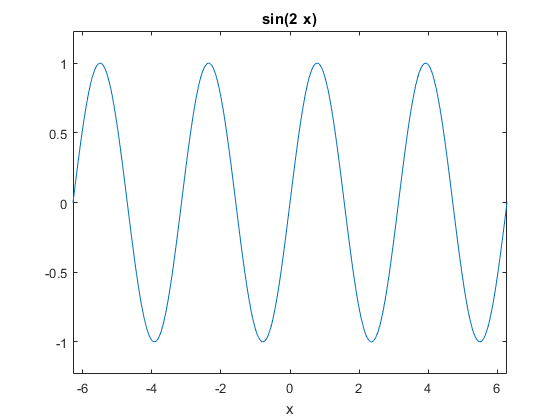 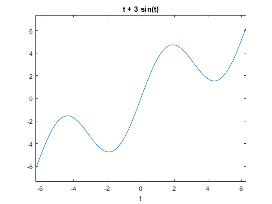 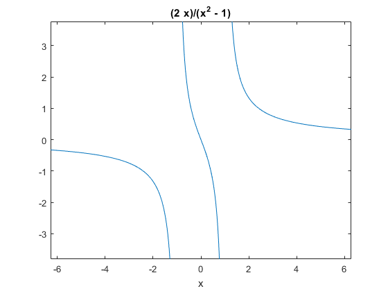 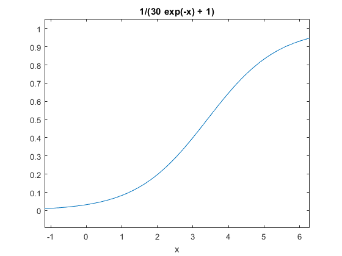 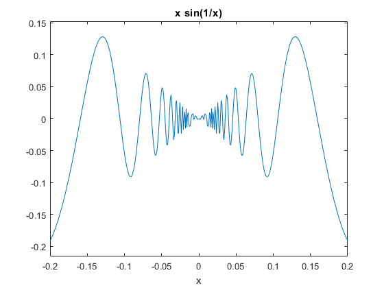 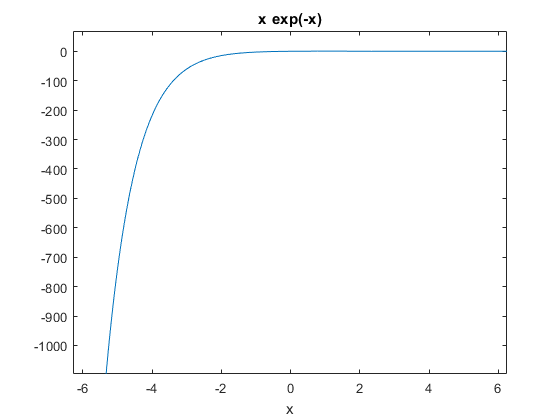 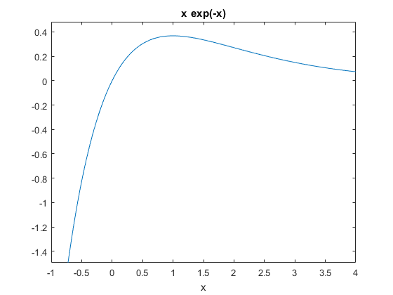 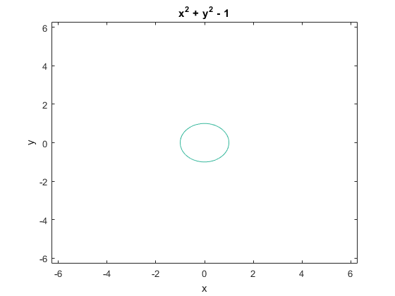 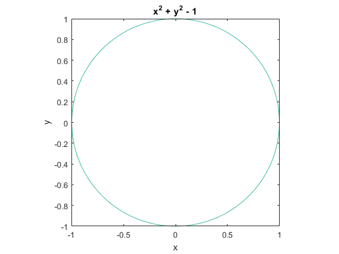
x = t-sin(t) y = 1-cos(t) ezplot(x,y, [-4*pi 4*pi])
x = t - sin(t) y = 1 - cos(t)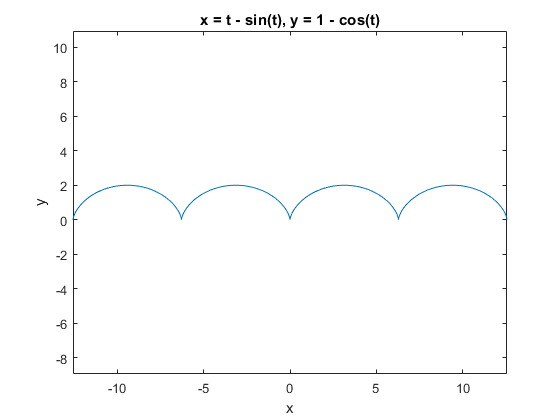
ezpolar(sin(3*t)) ezpolar(1/t, [1 10*pi])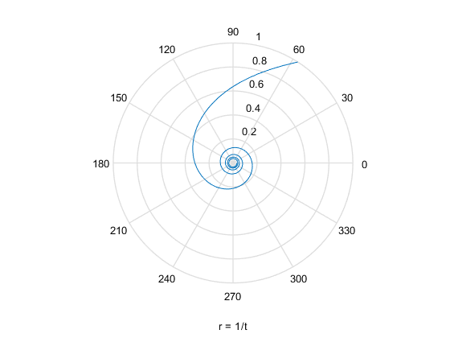
19.7 Three-dimensional surface graphs
%{ ezcontour 3-D contour plot ezcontourf 3-D filled contour plot ezmesh 3-D mesh plot ezmeshc 3-D mesh and contour plot ezsurf 3-D surface plot ezsurfc 3-D surface and contour plot %}
syms x y f = sin((x^2+y)/2)/(x^2-x+2) ezsurfc(f)
f = sin(x^2/2 + y/2)/(x^2 - x + 2)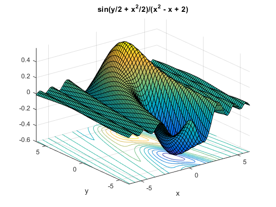
ezsurf(f, [-4 4 -pi pi])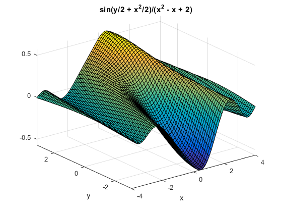
f = sin(abs(sqrt(x^2+y)))/(x^2-x+2) ezsurf(f)
f = sin(abs(x^2 + y)^(1/2))/(x^2 - x + 2)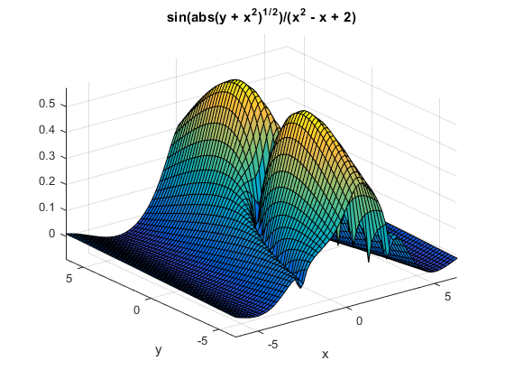
figure(1) ; clf syms u v x y z
ezsurfc(x,y,z,[0 2*pi])
19.8 Three-dimensional curves
syms x y z t x = 3*t / (1+t^3) y = 3*t^2 / (1+t^3) z = sin(t) ezplot3(x,y,z)
x = (3*t)/(t^3 + 1) y = (3*t^2)/(t^3 + 1) z = sin(t)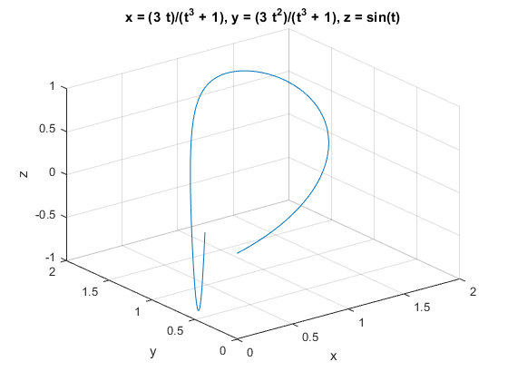
ezplot3(x,y,z,[-.9 10])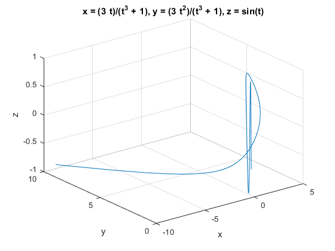
ezplot3(x,y,z,'animate')
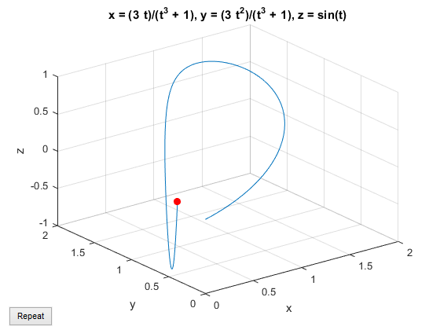 ezplot3(x,y,z, [-.9 10], 'animate')
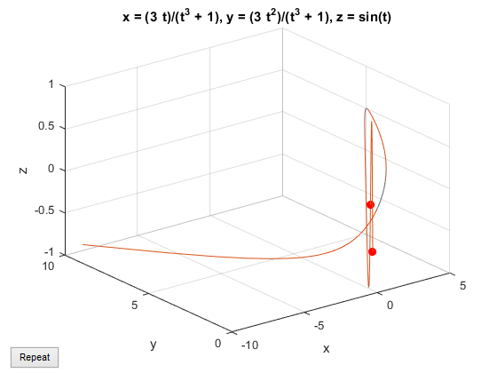 syms z z = 0 ezplot3(x,y,z,'animate')
z =
0
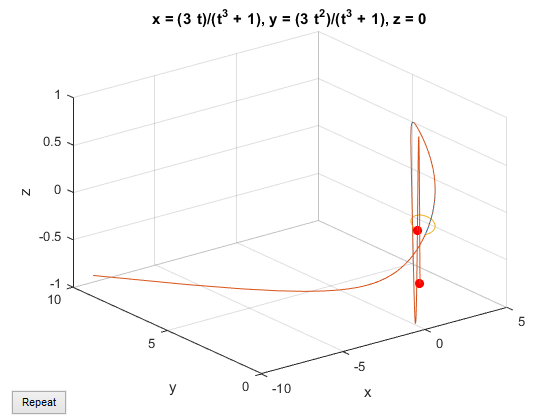 19.9 Symbolic matrix operations
a = magic(3) A = sym(a)
a =
8 1 6
3 5 7
4 9 2
A =
[ 8, 1, 6]
[ 3, 5, 7]
[ 4, 9, 2]
syms a b s K = [a + b, a - b ; b - a, a + b] G = [cos(s), sin(s); -sin(s), cos(s)]
K = [ a + b, a - b] [ b - a, a + b] G = [ cos(s), sin(s)] [ -sin(s), cos(s)]
L = K^2
collect(L)
% factor(L)
diff(L, a)
int(K, a)
J = K/G
simplify(J*G)
simplify(G*(G.'))
L = [ (a + b)^2 - (a - b)^2, 2*(a + b)*(a - b)] [ -2*(a + b)*(a - b), (a + b)^2 - (a - b)^2] ans = [ (4*a)*b, 2*a^2 - 2*b^2] [ 2*b^2 - 2*a^2, (4*a)*b] ans = [ 4*b, 4*a] [ -4*a, 4*b] ans = [ (a*(a + 2*b))/2, (a*(a - 2*b))/2] [ -(a*(a - 2*b))/2, (a*(a + 2*b))/2] J = [ (a*cos(s) + b*cos(s) + a*sin(s) - b*sin(s))/(cos(s)^2 + sin(s)^2), -(b*cos(s) - a*cos(s) + a*sin(s) + b*sin(s))/(cos(s)^2 + sin(s)^2)] [ (b*cos(s) - a*cos(s) + a*sin(s) + b*sin(s))/(cos(s)^2 + sin(s)^2), (a*cos(s) + b*cos(s) + a*sin(s) - b*sin(s))/(cos(s)^2 + sin(s)^2)] ans = [ a + b, a - b] [ b - a, a + b] ans = [ 1, 0] [ 0, 1]
19.10 Symbolic linear algebraic functions
%{ det determinant inv inverse null basis for null space colspace basis for column space eig eigenvalues and eigenvectors poly characteristic polynomial svd singular value decomposition jordan Jordan canonical form %}
c = randi([0 9], 4) D = sym(c) A = inv(D) inv(A) inv(A) * A det(A) b = ones(4,1) x = A\b A*x A^3
c =
3 9 5 2
8 8 2 8
5 5 3 1
3 6 4 2
D =
[ 3, 9, 5, 2]
[ 8, 8, 2, 8]
[ 5, 5, 3, 1]
[ 3, 6, 4, 2]
A =
[ -4/29, 1/87, 26/87, -5/87]
[ 15/29, 7/174, 4/87, -61/87]
[ -16/29, -7/58, -4/29, 32/29]
[ -7/29, 3/29, -9/29, 14/29]
ans =
[ 3, 9, 5, 2]
[ 8, 8, 2, 8]
[ 5, 5, 3, 1]
[ 3, 6, 4, 2]
ans =
[ 1, 0, 0, 0]
[ 0, 1, 0, 0]
[ 0, 0, 1, 0]
[ 0, 0, 0, 1]
ans =
-1/174
b =
1
1
1
1
x =
19
26
14
15
ans =
1
1
1
1
ans =
[ -6211/146334, 94243/2634012, -81985/658503, 148193/1317006]
[ -49393/292668, -431453/5268024, 106967/1317006, 745205/2634012]
[ 23293/97556, 199801/1756008, -58537/439002, -332593/878004]
[ 3980/24389, 1945/219501, 26906/219501, -75497/219501]
inv(K) simplify(inv(G)) p = poly(G) simplify(p) pretty(simple(solve(p))) pretty(simple(eig(G))) y = simplify(svd(G)) pretty(y) syms s real r = simplify(svd(G)) syms s clear
ans = [ (a + b)/(2*(a^2 + b^2)), -(a - b)/(2*(a^2 + b^2))] [ (a - b)/(2*(a^2 + b^2)), (a + b)/(2*(a^2 + b^2))] ans = [ cos(s), -sin(s)] [ sin(s), cos(s)]
Error using sym/poly (line 11) SYM/POLY has been removed. Use CHARPOLY instead. Error in ch19 (line 335) p = poly(G)
A = [t 1 0 ; 1 t 1 ; 0 1 t]
syms t
A = [t 1 0 ; 1 t 1 ; 0 1 t]
p = det(A)
solve(p)
for n = 4:6 A = sym(magic(n)) [V, D] = eig(A) end
A = sym(randi([0 9], 3)) [V, D] = eig(A) pretty(V)
A = vpa(randi([0 9], 3)) [V, D] = eig(A)
19.11 Solving algebraic equations
syms x b solve(2^x - b) solve(2^x + 3^x - 1) solve(2^x + 3^x - b)
syms x
f = x*cos(x) - 1
s = solve(f)
Z = solve(x^2 + 2*x - 1) pretty(Z)
syms x y z f = x^2 + y^2 + z^2 + x*y*z a = solve(f) pretty(a) simplify (subs (f, 'x', a))
b = solve(f, y)
pretty(b)
simplify (subs (f, 'y', b))
X = solve('log(x) = x - 2')
X = solve(log(x) - x + 2)
vpa(X)
X = solve('2^x = x + 2')
X = solve(2^x - x - 2)
vpa(X)
solve('1 + (a+b)/(a-b) = b', 'a')
solve('1 + (a+b)/(a-b) = b', 'b')
syms a b c x solve(a*x^2 + b*x + c, x) pretty(ans)
S1 = 'x^2 + y^2 + z^2 = 2' S2 = 'x + y = 1' S3 = 'y + z = 1'
[X, Y, Z] = solve(S1, S2, S3)
a = solve(S1, S2, S3) a.x a.y a.z
S2 = 'x + y + z = 1'
[X, Y, Z] = solve(S1, S2, S3)
syms x y z S1 = x^2 + y^2 + z^2 - 2 S2 = x + y - 1 S3 = y + z - 1 a = solve(S1, S2, S3) a.x a.y a.z
19.12 Solving differential equations
Y = dsolve('Dy = x^2*y', 'x')
Y = dsolve('Dy = x^2*y', 'y(0)=4', 'x')
dsolve('D2y + y = 0') dsolve('D2y + y = x^2', 'x') dsolve('D2y + y = x^2', 'y(0) = 4', 'Dy(0) = 1', 'x') dsolve('D2y - Dy = 2*y') dsolve('D2y + 6*Dy = 13*y') dsolve('D3y - 3*Dy = 2*y') pretty(ans)
E1 = 'Dx = -2*x + y' E2 = 'Dy = x - 2*y + z' E3 = 'Dz = y - 2*z'
[x, y, z] = dsolve(E1, E2, E3) pretty(x) pretty(y) pretty(z)